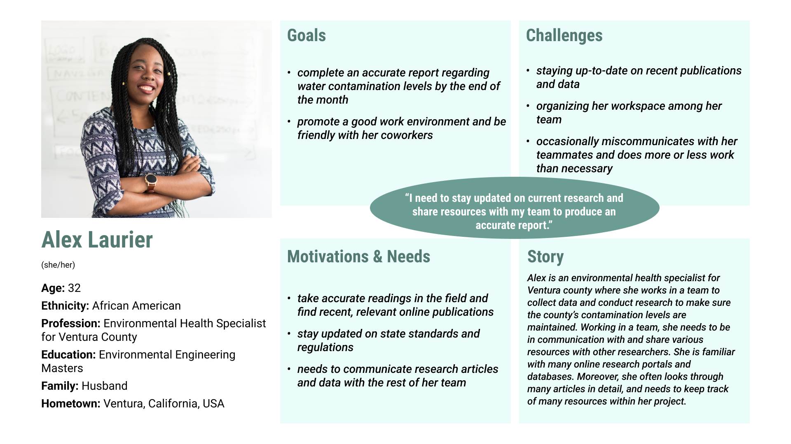
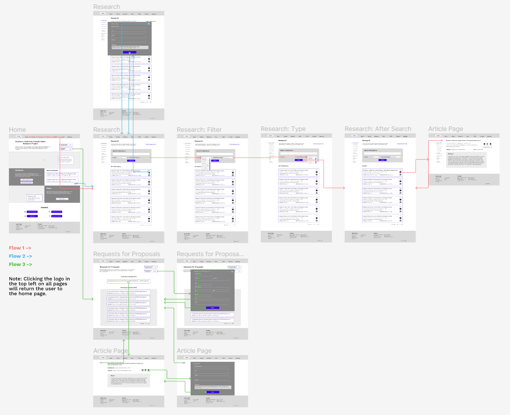
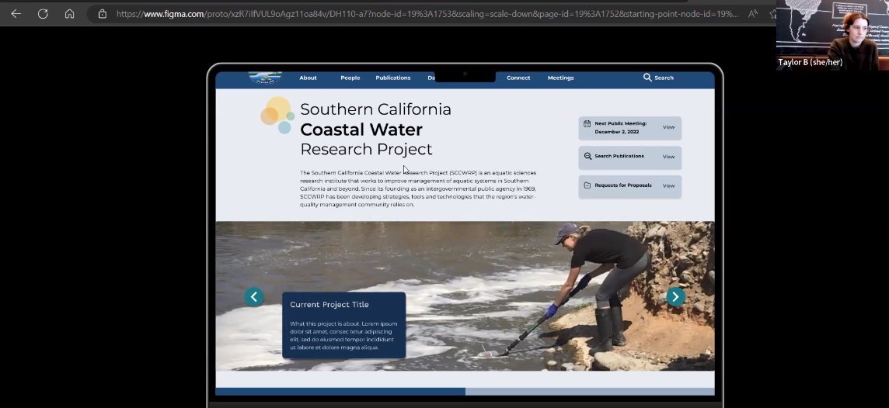

About
As part of the Fall 2022 Digital Humanities 110 class at UCLA, I redesigned the website for the Southern California Coastal Water Research Project (SCCWRP) to improve navigation and the overall user experience. The SCCWRP is an organization responsible for researching topics related to marine waters to help set state guidelines and manage numerous companies and other organizations across Southern California. With such a responsibility, their website must cater to a variety of users, and it is integral they communicate and organize various website functionality effectively. Target users include environmental scientists and engineers, government policy makers, and outside organizations involved in environmental or financial practices.
After reviewing their current website, I found it difficult to digest and not well organized. Thus, I hope to contribute a web design that more clearly displays information and is easier to navigate.
Design Statement
The Problem
For the project, the main issues I considered were:
- Difficult general navigation - several relevant pages are somewhat hidden, and the navigation bar appears overwhelming.
- Awkward search functionality - buttons do not follow button design conventions, difficult to read article titles, difficult to go back to previous search results.
- Cluttered page organization and lack of clarity - many large text paragraphs clumped together, lack of eye-catching elements.
The Solution
Improving the website’s navigation is important since they have a variety of information and functionality different users need to find. Additionally, improving search functionality and page clarity will make finding research easier and the site’s detailed information easier to digest. Thus, in this project, I set out to create a clearer, more eye-catching page design, a search page that better follows known website conventions, and an improved navigation bar and system.
Competitor analysis
The first step into investigating the potential issues with the SCCWRP’s website was to identify its specific design problems and compare it to a website with similar functionality and information. Therefore, I decided to conduct a heuristic analysis to accomplish both of these tasks. I also piloted a usability test to further investigate these issues and to verify the test’s quality and effectiveness for later prototype usability testing.
View the SCCWRP's Current WebsiteHeuristic Analysis
To identify potential design flaws, I conducted a heuristic evaluation where I analyzed the SCCWRP’s website according to how well it followed Nielson’s 10 Heuristics for System Usability. I then performed the same analysis on a similar website - Ocean Visions, an organization connecting companies with current environmental research on a larger scale.
From my analysis, I found Ocean Visions could improve its navigation system by better labeling its pages, and it could display more descriptive error messages when pages fail to load. However, there were no major usability issues for any one heuristic. On the other hand, the SCCWRP had major usability issues with regard to its navigation system (user control and freedom heuristic) and page clarity and organization (consistency and standards heuristic).
This analysis helped me to identify possible design solutions to the SCCWRP website’s issues, but before I could begin implementing these solutions, I would need to have actual users confirm these design problems.
Read MoreUsability Testing
Following my heuristic analysis, I pilotted a usability test featuring four tasks SCCWRP users were likely to engage in. This pilot usability test would help me to not only confirm issues found in the heuristic analysis, but to explore other potential issues as well.
The four tasks implemented in the usability test included: use search functionality to search for a research article, navigate to a relevant database, find information on public meetings, and find a researcher’s contact information. Moderating the usability test gave me insight as to how I should interact with and learn from participants.
Read MoreUser Research
Once the design problems were properly identified, I set out to find a potential solution. To begin this process, I needed to better understand the website’s users. Specifically, I was interested in how environmental scientists searched for and gathered relevant research, along with investigating the features of websites they often used.
To investigate this process, I interviewed an aspiring environmental engineer who had interned at a public research organization and is earning a degree focusing on hydrology and hydraulics at Humboldt State University.
I found the process of searching for research is time-consuming and involves reviewing numerous details about an article. Researchers often keep a working list of potential research to use based on the article’s abstract. They then more fully review each article to decide if they can use it. The participant also indicated research websites featuring many subtopics can easily feel overwhelming, so she usually uses a general search functionality.
Read MoreWith these insights, I sought to better define the potential users of the SCCWRP’s website, their specific needs, and how they would use the website.
UX Storytelling
After determining the main user groups for the SCCWRP’s website, I created two personas:
Alex Laurier
an Environmental Health Specialist working for Ventura County
Trent Ansari

an environmental science graduate student studying coastal water contamination
Based on these personas, I created an empathy map along with a user journey map for each. I then wrote a scenario for each persona describing how they would use the SCCWRP’s website, including searching for specific research articles and reviewing a recent report before sharing it with coworkers.
Read MoreAfter defining the users through these personas, I felt I understood user needs, so I went ahead and began the design process.
Wireframes & Low Fidelity Prototype
To begin the design process, I defined several central user tasks based on the persona scenarios. I additionally realized users would likely want to review Requests for Proposals (RFPs) on the website (especially outside public agencies relevant to Alex Laurier’s persona), so I decided to include a new task. The three tasks the prototype would focus on were:
- Search for a recent article assessing the sea life in California’s coastal waters (relevant to Trent’s User Scenario)
- Find a the most recent publication and send it to a coworker (relevant to Alex’s User Scenario)
- Determine the presently available Requests for Proposals and submit your contact information to be added to the bidder’s list
Using these tasks as I guide, I designed wireframes for each of the relevant pages before creating a user flow diagram mapping each of these tasks.
I then created a low fidelity prototype in Figma based on the digital wireflow and had a user walk through the lo-fi prototype to identify any particular pain points with the first version of my design. I determined there was slight confusion with the placement and change in buttons across several pages, and there was some confusion when locating recently published articles. I thus made two revisions to my proposed design where I added a sorting functionality to the research search page, and I made the decision to remove a button on the RFPs page and embed the content the button would have overlaid directly on the page.
Read MoreInterface Design


After conducting an initial usability test and refining the placement of page elements, it was time to design each of the elements and determine the overall look and feel of the redesigned website. Using the home page from my wireframes, I made several design iterations on the website’s layout, font family, color scheme, along with button and callout shapes. I decided on a final design for both a light mode and dark mode for the website, and I ensured all color contrast pairings passed at a WCAG AA level. From there, I conducted an impression test on the redesigned homepage, and because the participant described my design as clear and professional, I decided my interface was suitable to move forward with.
The final design (light mode):
 Read More
Read More
High Fidelity Prototype
Based on the digitized low fidelity prototype and interface redesign, I implemented the decided graphic styling on each page from the wireframes and created a user flow diagram with the more polished webpages, as seen above. Because using cell phones to complete tasks is becoming more and more commonplace, I additionally created a graphic interface and user flow for a mobile version of the website, as pictured above. However, as users indicated they would mostly use the SCCWRP on a desktop computer (see user research above), I kept my focus on the website’s desktop version.
I then created a high fidelity prototype in Figma based on the website version’s updated user flow diagram, complete with animations and button interactivity. Review the high fidelity prototype below:
Redesign Evaluation & Revision
As a final step in the research and design process, I evaluated the redesign and determined how to revise it.
I conducted a cognitive walkthrough with my peers, fellow UX designers also enrolled in Digital Humanities 110. From this, I learned some labels could be reworded for clarity, several links in the navigation menu dropdowns should and could be better distinguished from others, the back button should be more consistently placed across all pages, and navigating to the publications search page should be even more readily available from the home page.
After the cognitive walkthrough, I also conducted two usability tests based on the earlier usability test, but with revised tasks more in line with the three defined when creating the initial prototype. Both participants were able to complete all tasks, and from analyzing their Production Satisfaction Card selection, the top words used to describe the redesign are “calm” and “professional”. Additionally, the redesign’s SUS score was 64.17 (see linked documentation below for more details on calculation). From these usability tests, I determined finding recent publications still took too long, so I added a subheading titled “Recent Publications” to the publications search page. I also determined some text sizes were too small as one participant had difficulty reading information, so I increased their font size.
More on the Hi-Fi Prototype & Usability TestingFinally, I used what I learned from the cognitive walkthrough and usability tests to make some final adjustments to the redesign. The final design can be seen below:
Pitch video
Conclusion
To further the design process for the SCCWRP redesign, I would conduct five usability tests with target users on the updated, final design. I believe this would identify any hidden problems with the design before it would be truly finalized, and the feedback could verify the website as effective and professional.
Overall, the process of researching and designing the SCCWRP’s website was slightly challenging. The SCCWRP’s website serves a variety of purposes, so identifying which pages were the most important for the most users and reorganizing the pages in the updated navigation bar felt challenging. Still, I enjoyed the challenge and did my best to tackle the design problems as best I could. My favorite part of this project was determining exact solutions to the individual problems I faced - both in the initial design (e.g., when I was trying to figure out where to put the News Articles page in the navigation bar) and after given feedback (e.g., when a user had difficulty finding recent publications). I enjoyed the ideation and implementation process - I wanted to improve usability and know that my improvements made a difference.
Nevertheless, I did struggle during the user research portion of the project in terms of recruitment. My user group was defined as adults older than 25 working in environmental research or for institutions carrying out work related to SCCWRP needs. In my network, I do not know many individuals meeting this description. I talked with friends, family, coworkers, and posted on online forums looking for potential participants/interviewees, and still had difficulty finding participants. However, I was able to find several individuals passionate about environmental research who were excellent, though were a few years younger than my intended user group.
I did not expect the design and prototyping phases of this project to be the most fun for me, but it was a pleasant surprise. In future UX projects, I think I would put more emphasis on and devote more time to the user research phase. I think interviewing more than one participant to help me learn more about the user group would have helped me design some of the tasks better earlier on. Furthermore, in both prototyping phases of future projects (both lo-fi and hi-fi), I would like to conduct 3-5 usability tests to better understand user pain points with the current design - I think it would better help me iterate on the design.